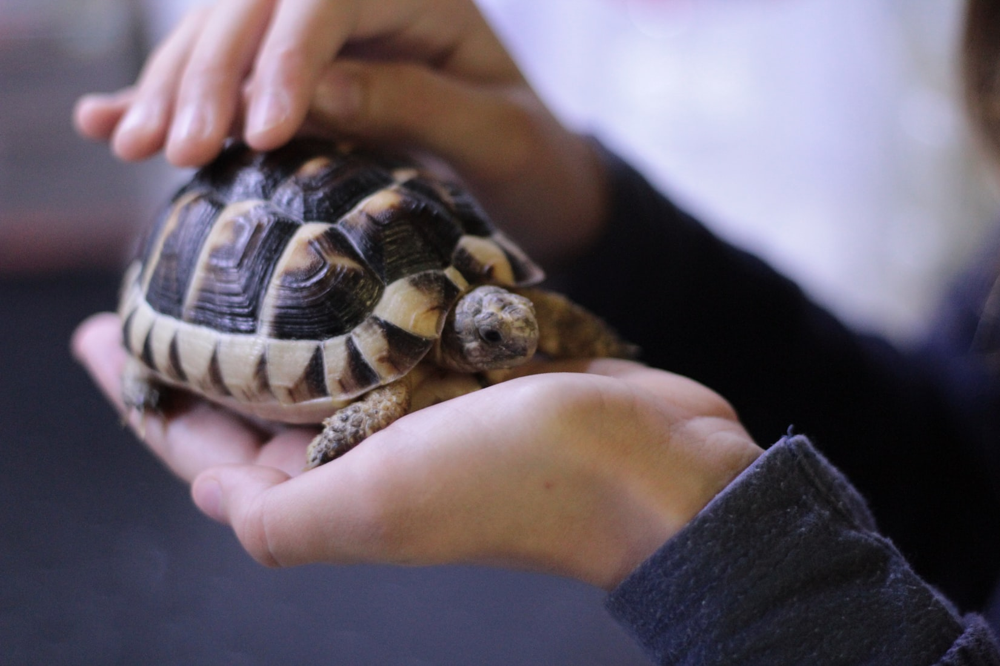
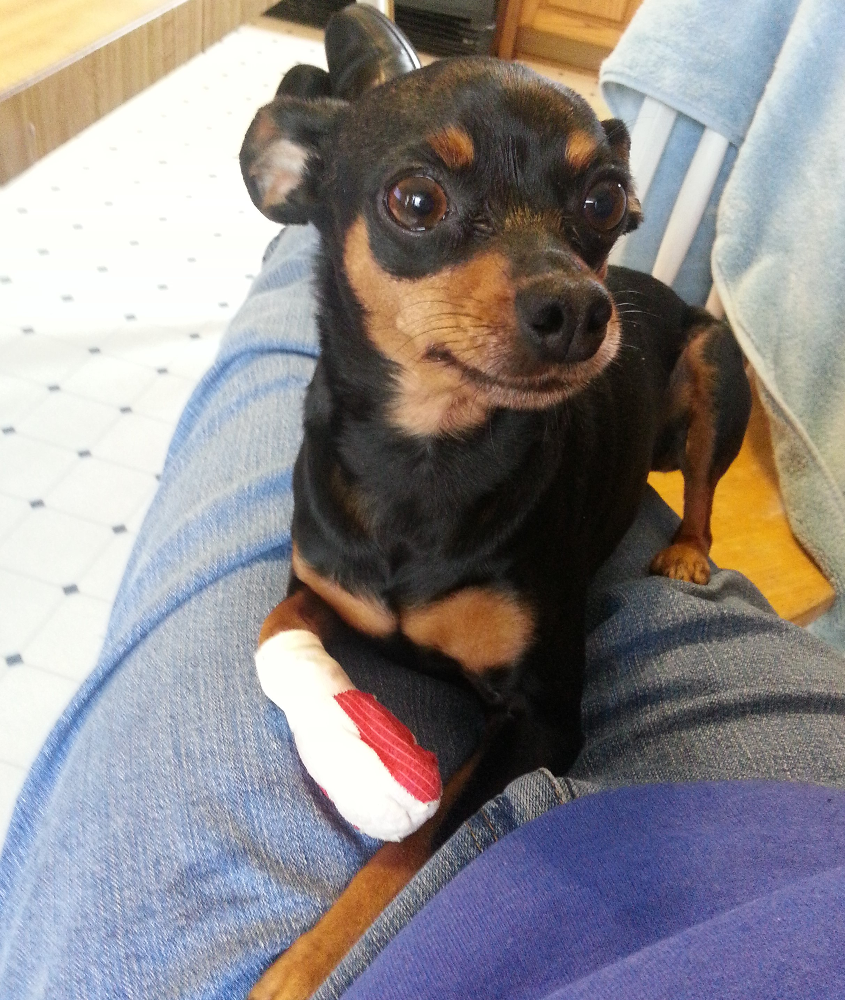
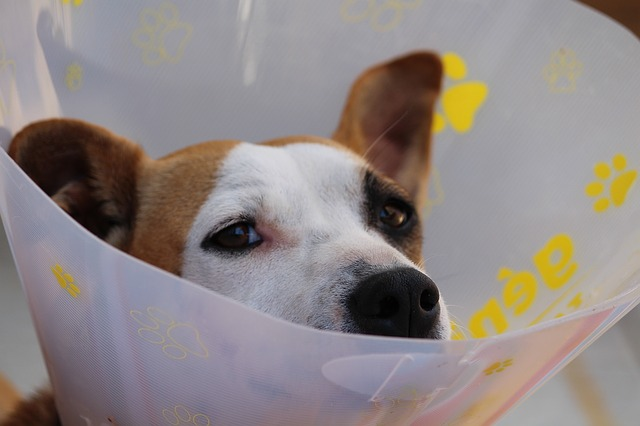

Testimonials

“We found Tilly on the side of the road after being hit by a car. I took her to Northern Kentucky Animal Clinic, not even sure if they would take a turtle as a patient. They took wonderful care of her and with their help, we have nursed her back to great health!”
Cindy Lou

“Bella's paw was cut when she was running around in the backyard. She was terrified when I took her into the veterinarian's office, but they were so patient and gentle with her, that she let them clean and wrap her paw with no issues. She's now running around on it again with no problem. Thanks!”
Stephanie

“Lassie had surgery at your clinic last week and needed to stay for a couple of days. It was such a comfort to hear from your staff several times a day to let me know how she was doing. And I felt better knowing someone was there with her at night. Kudos to a great veterinarian and great support staff!”
Stephanie